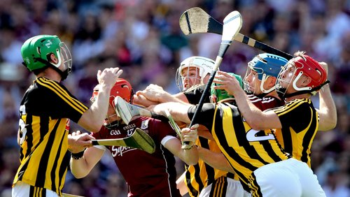
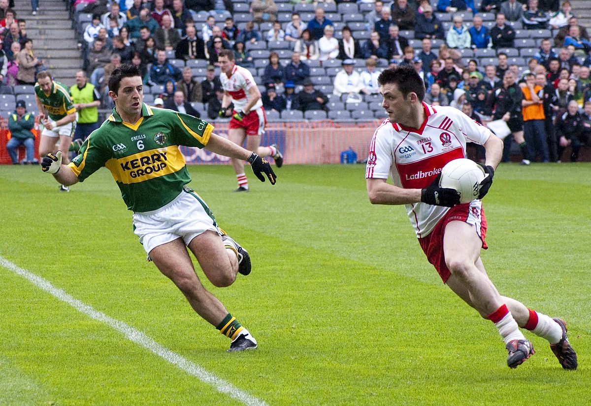
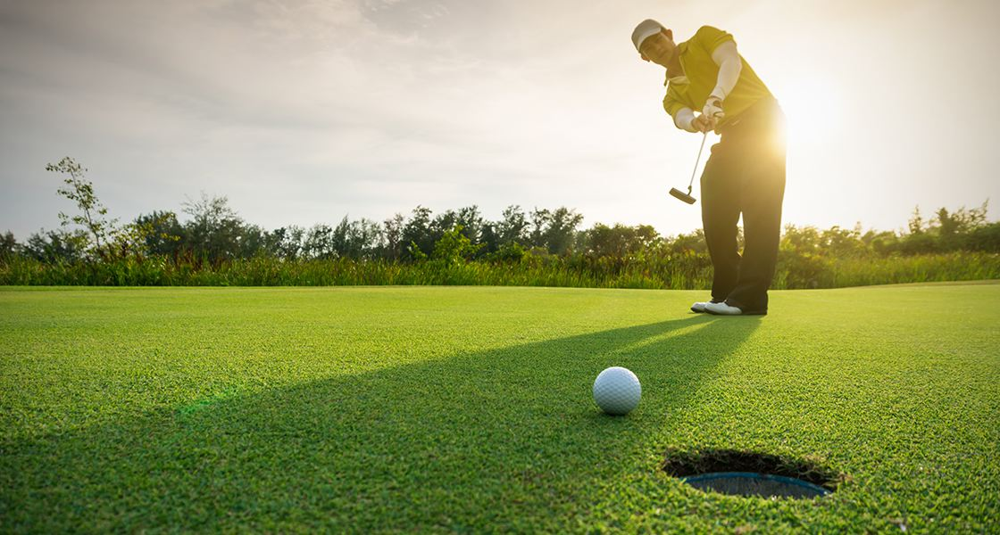

Hurling is my favourite sport. I have been playing hurling since i was five. Each week I have 3 training sessions on Monday, Wednesday and Friday. I was in my first Hurling county final in 2017 but we lost, thankfully we reached the final again in 2018 and won. This was a huge day for the club as it was the first county win by any team in the 62 years of it existence. At underage levels i represented Seandun divisional squads and also represented Cork on numerous occasions.
I play Football with the same club that I play hurling with. Similar to Hurling i have been playing since i was five. I train twice a week in football on Tuesdays and Sundays. Football is the primary sport in the GAA club but in recent years hasn't had the same attention as Hurling has received. In the history of the club we have reached 4 county finals, unfortunately losing all 4. Each time we have been getting closer and its only a matter of time before we win one. At underage levels we won the league 5 years in a row but unfortunately couldn't produce the same form in the championship.
Golf is a sport i play during the Summer. I usually play one to two rounds each week and enter most of the competitions. I am a member of two clubs Cork Golf Club and Clonakilty Golf Club. In 2015 I won The Juvenile Captains Prize. This was to be my first and only competition win to date, with plenty of second and third place finishes. I have won plenty of long drive competitions with the most recent in Cork Electronics & Enterprise Competition in Fota Golf Club in June 2018.
